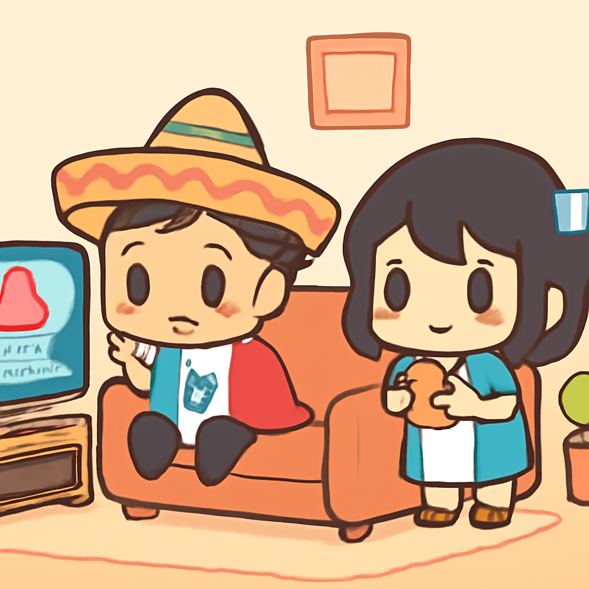
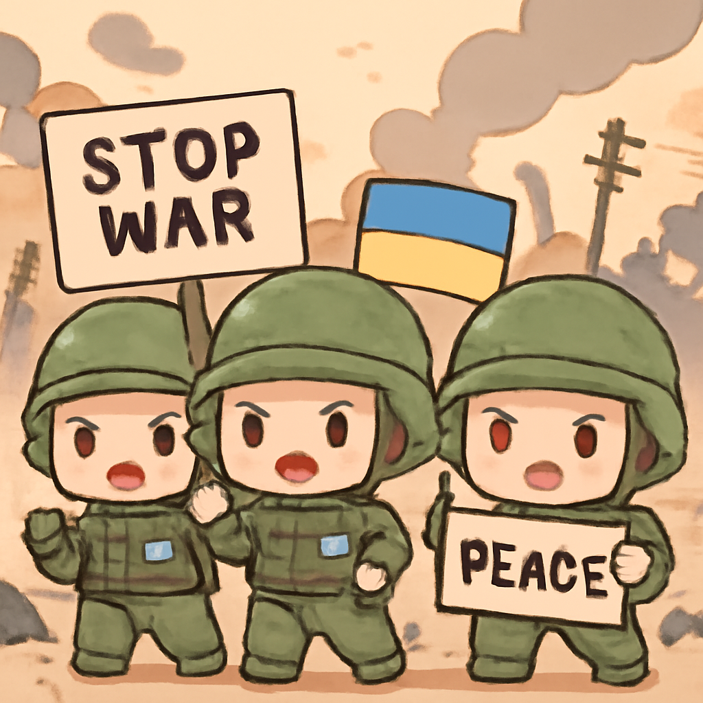
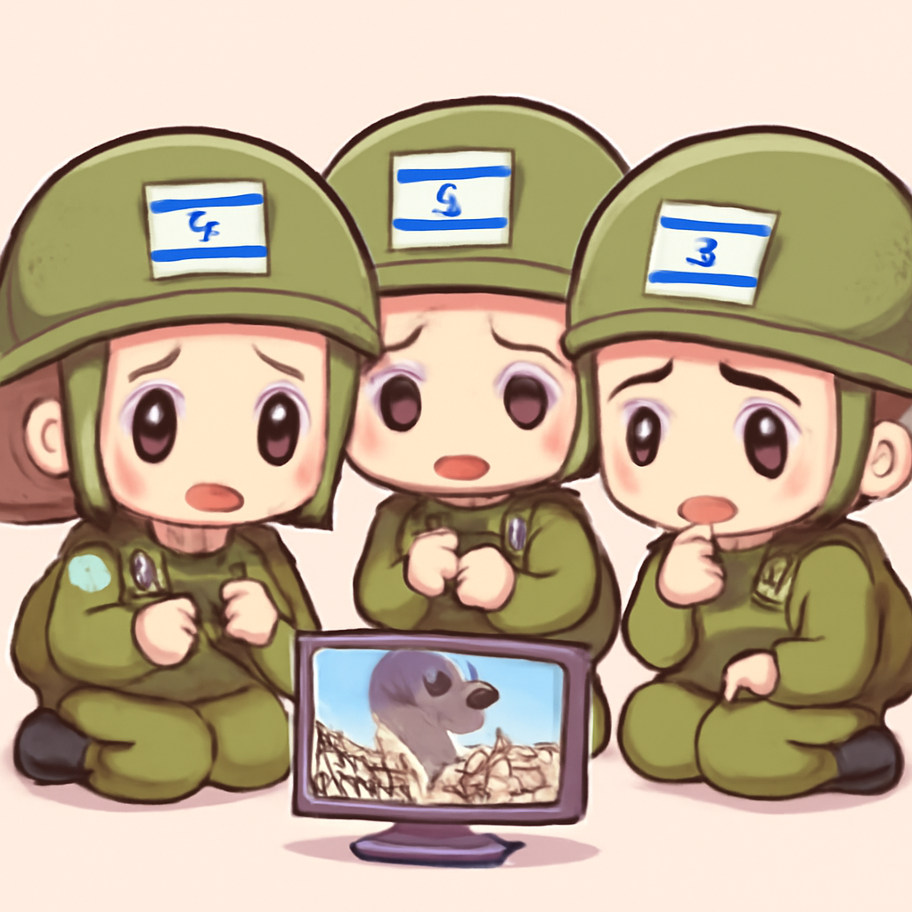
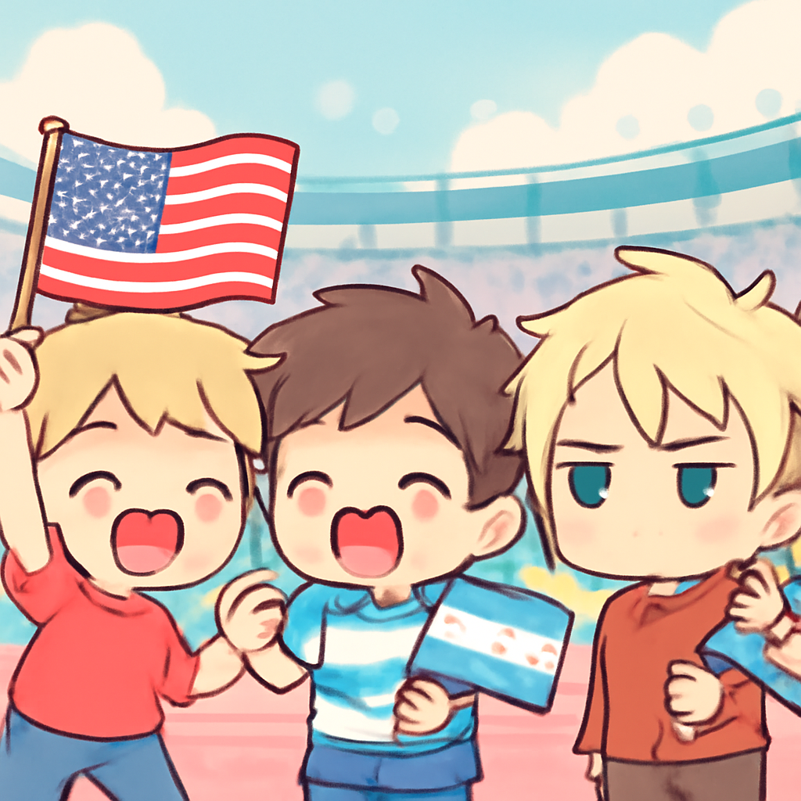
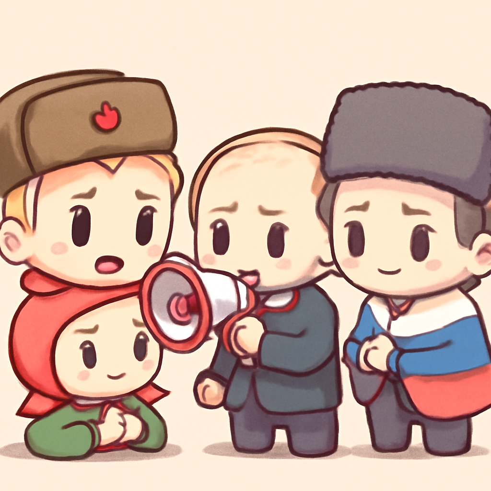

其一 · 墨西哥 · 7.3級地震引發海嘯警報
墨西哥與瓜地馬拉邊界附近發生強震

在墨西哥和瓜地馬拉邊界附近，發生了7.3級強震，震中位於海域，造成震感遍及多個國家。美國海嘯警報中心已發出海嘯警告，讓人心驚膽跳。不過，別擔心，大家趕快檢查一下家裡的食物儲備，以防萬一！
🔗 原始新聞 ↗
2026-07-18 · 以古觀今，以笑抗愁
墨西哥與瓜地馬拉邊界附近發生強震

在墨西哥和瓜地馬拉邊界附近，發生了7.3級強震，震中位於海域，造成震感遍及多個國家。美國海嘯警報中心已發出海嘯警告，讓人心驚膽跳。不過，別擔心，大家趕快檢查一下家裡的食物儲備，以防萬一！
🔗 原始新聞 ↗
烏克蘭士兵對國防部長的撤職感到憤怒

烏克蘭最近撤換國防部長，立刻引發軍隊內部的抗議，士兵們在社交媒體上表達了不滿。這一舉動在戰時背景下引發了關注，因為士兵們擔心這會影響戰鬥力。看來政治和軍事之間的火花又要飛出了！
🔗 原始新聞 ↗
以色列軍方在加薩空襲造成平民傷亡

以色列軍方對加薩進行空襲，導致七人喪生，並有多名平民受傷。這次空襲被指向一個武裝組織成員，但不幸的是，也波及無辜民眾。這樣的衝突讓人心痛，和平的希望似乎又被撕裂了。
🔗 原始新聞 ↗
美國支持阿根廷隊引發英國不滿

美國華府針對阿根廷足球隊在比賽中展示福克蘭群島的標語表達支持，引發英國的強烈反對。這件事情不僅是球賽的爭議，還可能成為外交上的一顆定時炸彈。看來，體育賽事也能成為國際政治的舞台！
🔗 原始新聞 ↗
俄羅斯政府對反戰人士進行打壓

在俄羅斯，反戰活動人士面臨嚴厲打壓，反對派成員被禁止參選，另一名部落客則被拘留。這一系列行動引發國際關注，顯示出當前政治環境的緊張。看來，言論自由的美好理想在某些地方仍然遙不可及。
🔗 原始新聞 ↗